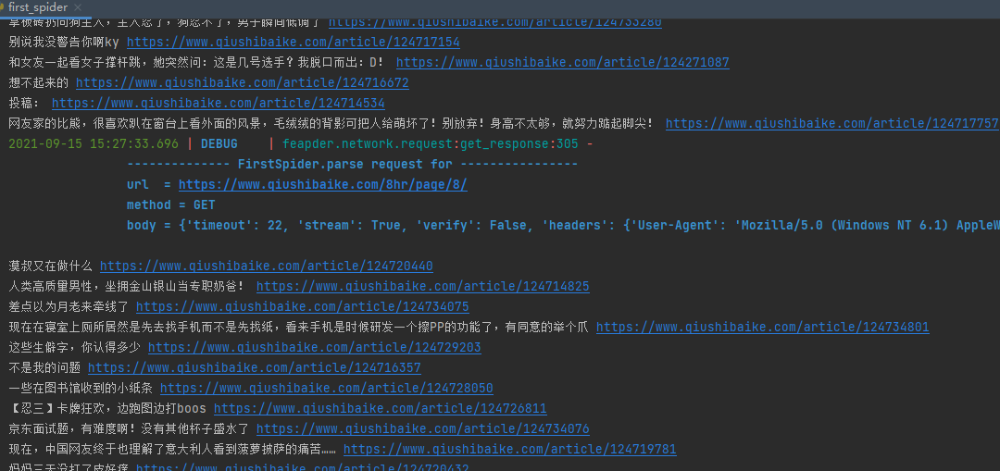
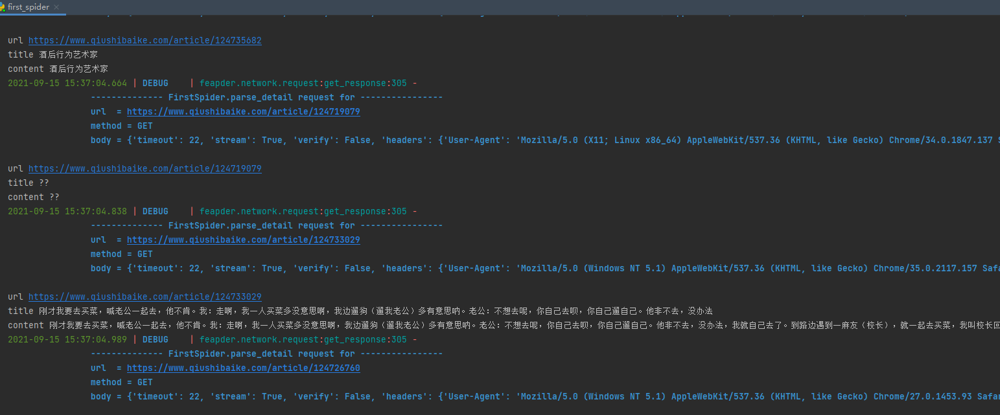

本文最后更新于：2021年9月15日 下午
简介 feapder 是一款上手简单，功能强大的Python爬虫框架，使用方式类似scrapy，方便由scrapy框架切换过来，框架内置3种爬虫：
AirSpider爬虫比较轻量，学习成本低。面对一些数据量较少，无需断点续爬，无需分布式采集的需求，可采用此爬虫。Spider是一款基于redis的分布式爬虫，适用于海量数据采集，支持断点续爬、爬虫报警、数据自动入库等功能BatchSpider是一款分布式批次爬虫，对于需要周期性采集的数据，优先考虑使用本爬虫。
feapder 支持断点续爬 、数据防丢 、监控报警 、浏览器渲染下载 、数据自动入库Mysql 或Mongo ，还可通过编写pipeline 对接其他存储
安装 安装要求
Python 3.6.0+
Works on Linux, Windows, macOS
安装 这里使用pip安装即可。如果要安装完整版pip3 install feapder[all]，可能会报错参见[官方文档](安装问题 - feapder-document (boris.org.cn) )。
使用 创建一个爬虫
feapder create -s first_spider
创建后的爬虫代码如下：
import feapderclass FirstSpider (feapder.AirSpider ):def start_requests (self ):yield feapder.Request("https://www.baidu.com" )def parse (self, request, response ):print (response)if __name__ == "__main__" :
直接运行，打印如下：
C:\Users\q\AppData\Local\Programs\Python\Python39\python.exe D:/PycharmProjects/Spider_learning/feapder_eaxmple/first/first_spider.py
输出日志还是中文的，应该是国人开发的框架。
上手 测下官方文档中的列子，手刃糗事百科 - 超搞笑的原创糗事笑话分享社区 (qiushibaike.com)
直接在上面创建的项目中修改start_requests：
class FirstSpider (feapder.AirSpider ):def start_requests (self ):for i in range (0 , 20 ):yield feapder.Request("https://www.qiushibaike.com/8hr/page/{}/" .format (i))
再改改parse：
def parse (self, request, response ):'//a[@class="recmd-content"]' )for article in article_list:"./text()" ).extract_first()"./@href" ).extract_first()print (title, url)

细心的把文章的连接都给补全了。
提取详情页：
在parse中添加回调函数：
yield feapder.Request(
再定义一个parse_detail进行详情页的解析。
注意： 这是设置response.encoding_errors = ‘ignore’ # 无视编码错误，避免报错
def parse_detail (self, request, response ):""" 解析详情 """ 'ignore' 'string(//div[@class="content"])' ).extract_first() print ("url" , url)print ("title" , title)print ("content" , content)
嫌弃跑的太慢? 我们可以加一个参数轻松解决，这是开15个线程。
if __name__ == "__main__" :15 ).start()

不得不说，确实很方便，对于这种没有限制的网站傻瓜式爬取。